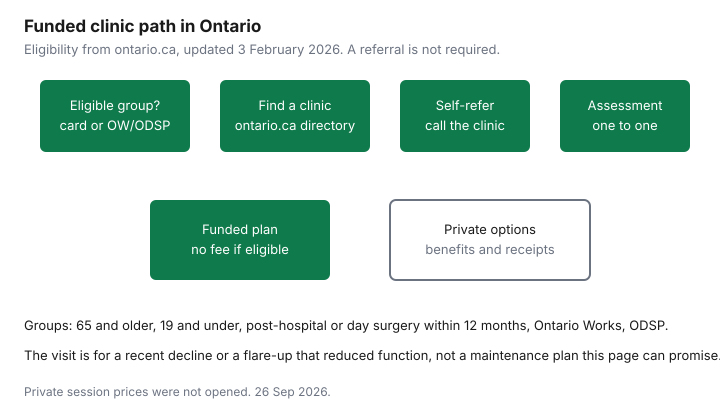

Healthcare · Canada
Free Physiotherapy in Ontario: Who Qualifies for OHIP-Funded Clinics and How to Get In
Ontario funds physiotherapy in designated community clinics for specific groups, at no fee when you are eligible. The surprise for many households is that a doctor’s referral is not the ticket, and that a stable exercise habit is not the same thing as a recent loss of function. This page uses the ministry page updated 3 February 2026, the College of Physiotherapists page updated 22 May 2026, and OHIP INFOBulletin 251004. It is not medical advice about whether you need treatment. The physiotherapist’s assessment decides the plan. If you are not in an eligible group, the private-pay section is the paperwork, not a price list. No private session fee was opened, so the often-quoted range for a private visit is not printed.
Key takeaways
- With a health card: age 65 and older, age 19 and under, or any age within 12 months of an overnight hospital stay or day surgery for a condition that needs physiotherapy. Ontario Works and ODSP: any age, and the ministry page says a health card is not required.
- There is no fee if you are eligible. Bring the health card unless you are attending as an Ontario Works or ODSP recipient under that exception.
- A physician or nurse-practitioner referral has not been required since 1 April 2024. Bulletin 251004, issued 16 October 2025, tells clinics how self-referral claims are submitted. You call the clinic.
- The funded reason is a recent decline in function, or a flare-up that caused one. The pages do not promise ongoing maintenance for a stable condition.
- Private receipts still matter if you do not qualify. A cancelled cheque is not a receipt. No private per-visit price is printed here.
Who qualifies: 65+, 19 and under, post-hospital stays and ODSP/OW recipients (verify categories)
The ministry page “Physiotherapy clinics (government-funded),” updated 3 February 2026, says that with a valid Ontario health card you can receive government-funded physiotherapy if you are 65 or older, 19 or under, or any age after an overnight hospital stay or an outpatient or day-surgery procedure within the last 12 months for a condition requiring physiotherapy. Recipients of Ontario Works or the Ontario Disability Support Program qualify at any age, and the page says an OHIP card is not required for them. The College of Physiotherapists page, updated 22 May 2026, repeats those groups and says the health card is not required for Ontario Works or ODSP. Bulletin 240603 states the same list and adds the sentence people skip: a referral does not guarantee eligibility. If you are outside the list, you pay privately or through a third-party insurer.
Other publicly funded doors exist and are not the same clinic program. The college lists some community health centres, some family health teams, student-run clinics, Aboriginal Health Access Centres where physiotherapy is offered, and the Arthritis Society’s Arthritis Rehabilitation and Education Program, which the college says is free with an Ontario health card and a confirmed arthritis diagnosis. After a hip, knee, or shoulder replacement, bundled care is arranged by the hospital, not by walking into any clinic and citing this page. In-home physiotherapy, if you are 65 or older and need care in your residence or a retirement home, goes through Ontario Health atHome. The college lists 1-833-515-1234. Those routes have their own intake. Do not treat them as automatic add-ons to a community-clinic episode.
Funded services on the ministry page include an assessment and treatment of flare-ups or worsening symptoms of chronic conditions, a recent illness, injury, or accident, and post-operative rehabilitation. Physiotherapy can be enhanced with exercise and falls-prevention classes. Some clinic sites also sell fee-based services such as chiropody, massage, or sports medicine. Those fee-based services are not the funded physiotherapy. Ask which appointment you are booking. If you are eligible, the page says there is no fee. Bring the health card.
Self-referral: no doctor's referral required since the 2025 change
The heading follows the bulletin people now see. The effective date of the rule is earlier. OHIP INFOBulletin 251004, issued 16 October 2025, says program changes effective 1 April 2024 removed the need for a referral from a physician or nurse practitioner. You can self-refer by contacting a clinic and booking. The 2025 bulletin’s own system change is for the clinic’s claim: self-referred claims no longer need to be flagged for manual review, and the referring number on the claim is the billing number of the clinic that provided the service. That referring-number detail is the clinic’s problem, not a form you fill out at home. A director memo dated 16 April 2024 says the same removal of the referral requirement, effective 1 April 2024, and says that if you bring a referral anyway the clinic should still accept it.
The College of Physiotherapists states the patient version in one line: you do not need a referral to receive care at a community physiotherapy clinic. Call, say which eligible group you are in, and ask for an assessment. If the clinic asks for a doctor’s name, that can be for your record, not because the bulletin still requires a referral. If a clinic turns you away solely for lack of a referral and you are in an eligible group, ask them to look at the 16 October 2025 bulletin and the college page. Eligibility itself is still theirs to confirm against the list.
What counts: recent injury, surgery or decline vs maintenance care
The ministry page says to use this option after a recent illness, injury, accident, or surgery that led to a decline in function or movement, or after a flare-up or worsening of symptoms from a previous fall, accident, surgery, or chronic condition that led to a decline in function or movement. Both branches require a decline. A wish to “keep things from getting worse,” with no recent change, is not the sentence on the page. Exercise and falls-prevention classes are listed as something funded physiotherapy can include. They are not described as a standing maintenance membership.
The physiotherapist meets you one-to-one to determine a treatment plan and supervises the physiotherapy. That assessment is where a flare-up of an old back injury can qualify and a long-stable exercise program might not. Ask the clinic to say which branch you are in before you take a funded slot someone else needs, and before you pay privately for something the program would have covered. No visit maximum was printed on the pages opened. Do not assume a number of funded visits from another province or from a workplace plan. Ask this clinic how the episode is structured.
Finding a participating clinic and handling wait times
The ministry page points to a physiotherapy clinic directory and says to contact the clinic for an appointment. The locations page is publicly funded physiotherapy clinic locations. Use it, then phone. Ask whether that address is a participating community physiotherapy clinic for the government-funded program, not only a private practice that rents a room nearby. Ask the date of the next funded assessment and whether there is a wait list. No provincial wait-time statistic was opened on 26 Sep 2026, so this page does not say “six weeks” or any other number. A long wait is a reason to ask about in-home care if you are 65 or older, or about a private visit if function is dropping and the funded appointment is far away. It is not a reason to invent a queue length.
Health811, which the college mentions, can help you find services. It does not enrol you. For a recent joint replacement, call the hospital’s patient-care coordinator about bundled-care clinics rather than the general directory alone. If you need care at home, use Ontario Health atHome rather than asking a community clinic to travel. The hearing-aid guide is a different application, for a device. Do not mix the two programs in one phone call and expect one office to handle both.
Paying privately: using benefits and receipts when you don't qualify
If you are 20 to 64, you have not had a qualifying hospital stay in the last 12 months, and you are not on Ontario Works or ODSP, the community clinic program is not your route. A workplace paramedical benefit may pay a physiotherapist up to a dollar maximum per benefit year. The coordination guide applies when two plans might share the receipt. The employer-benefits guide is a health spending account, which is not OHIP and not automatic. The benefits-before-65 guide is the workplace plan that may end before a public program begins. Read the booklet for whether physiotherapy is included and whether a doctor’s referral is a plan rule even though OHIP no longer requires one. A plan can be stricter than the province.
Income Tax Folio S1-F1-C1, opened 26 Sep 2026, treats a physiotherapist as a medical practitioner when the person is authorized to practise under the law of the province. It says fees paid for physiotherapy are eligible medical expenses only to the extent a medical practitioner provided them within their professional training. A receipt should show the purpose, the date of payment, the patient, and the practitioner who gave the service. A cancelled cheque is not a receipt. Guide RC4065, the 2025 edition, says the federal claim subtracts the lesser of $2,834 or 3 percent of line 23600. Amounts a plan reimbursed are not claimed again. The tax-credit guide is the wider checklist. This is not tax advice. The folio’s example about a charity receipt is a reminder to see who actually treated you, not a reason to claim a gym membership as physiotherapy.
| Group | Referral needed? | What is covered | Source date |
|---|---|---|---|
| 65 and older | No. Self-referral since 1 April 2024. | Assessment and treatment in the funded program, at no fee, with a health card. In-home care is a separate Ontario Health atHome path. | Ministry page updated 3 February 2026. |
| 19 and under | No. | Same funded clinic services, with a health card. | Same page. |
| After overnight hospital or day surgery | No. | Any age, within 12 months, for a condition requiring physiotherapy. | Same page. Bulletin 240603 states the day-surgery wording. |
| Ontario Works or ODSP | No. | Any age. Ministry page: health card not required. | Ministry page updated 3 February 2026. College page updated 22 May 2026. |
| On the receipt | Why you keep it |
|---|---|
| Patient name | Plans and the credit are for a named person, not a household cash total. |
| Provider name and the fact they are a physiotherapist | The folio ties eligibility to a practitioner authorized in the province. A gym invoice is not this line. |
| Date of the service and date of payment | Benefit years and the 12-month medical-expense window both use dates. |
| What was provided | Assessment, treatment, or a class. Fee-based massage at the same clinic is a different benefit category. |
| Amount you paid, after any plan payment | Do not claim the reimbursed portion again. RC4065 uses the lesser of $2,834 or 3 percent of line 23600 for the 2025 guide. |
| Not a cancelled cheque alone | The folio says a cancelled cheque is not a substitute for a receipt. |
Home exercise programs that stretch the funded visits
The ministry page says physiotherapy can be enhanced with exercise and falls-prevention classes. Use that as the question at the assessment: what you will do between visits, which movements are yours to practise, and which signs mean you should stop and call. A home program does not create extra funded visits, and this page cannot tell you a number of visits to expect. It can tell you to leave with the exercises written down, because a verbal list is forgotten and a second assessment spent repeating it is a visit you did not need to use.
If the episode ends and you are stable, the pages opened do not convert that ending into ongoing funded maintenance. Private visits, a benefit plan, or a class you pay for are the next options. If a new injury or a clear flare-up with a loss of function happens later, you start again with eligibility, not with an assumption that the old episode is still open. Bring the health card. Ask whether the new problem is inside the program. Then do the home work the physiotherapist actually prescribed, which is a clinical instruction from them, not from this article.

Sources & date stamps
- Ontario, physiotherapy clinics (government-funded), updated 3 February 2026. Eligibility, no fee if eligible, the decline-in-function test, and exercise and falls-prevention classes.
- Ontario, publicly funded physiotherapy clinic locations. Directory linked from the program page.
- College of Physiotherapists of Ontario, government-funded physiotherapy, updated 22 May 2026. No referral required. In-home line 1-833-515-1234. Arthritis Society program and bundled care for joint replacement, as described on that page.
- OHIP INFOBulletin 251004, issued 16 October 2025, and bulletin 240603. Referral removed effective 1 April 2024. Self-referral claim instructions for clinics.
- CRA guide RC4065 (2025) and Income Tax Folio S1-F1-C1. Physiotherapist as an authorized practitioner, receipt contents, threshold the lesser of $2,834 or 3 percent of line 23600. Dropped: private session prices, including any $90 to $120 lead, because no dated clinic fee was opened. Dropped: any funded-visit maximum, because none was printed on the pages opened.
Frequently asked questions
Who qualifies for OHIP-funded physiotherapy?
With a valid Ontario health card, the program page updated 3 February 2026 covers people 65 and older, people 19 and under, and people of any age after an overnight hospital stay or an outpatient or day-surgery procedure in the last 12 months, for a condition that needs physiotherapy. Ontario Works and Ontario Disability Support Program recipients qualify at any age, and the page says a health card is not required for them. The College of Physiotherapists repeats that list and adds other publicly funded doors, such as some family health teams and the Arthritis Society program for a confirmed arthritis diagnosis. A referral does not create eligibility if you are outside the list.
Do I need a doctor's referral?
No. The College of Physiotherapists page, updated 22 May 2026, says you do not need a referral to a community physiotherapy clinic. OHIP INFOBulletin 251004, issued 16 October 2025, says a physician or nurse-practitioner referral has not been required since 1 April 2024, that you contact the clinic yourself, and that you may still bring a referral if you have one. Call the clinic, confirm you are in an eligible group, and book the assessment.
Is maintenance therapy covered?
The program page describes care after a recent illness, injury, accident, or surgery that reduced function, or after a flare-up or worsening of an older condition that reduced function, and exercise and falls-prevention classes can be part of funded services. The pages opened do not describe an open-ended maintenance plan for someone who is stable. Ask the clinic whether your situation is a recent decline or a flare-up. If it is neither, ask about private care or another program rather than assuming the funded visits continue.
How do I find a participating clinic?
Start with the clinic directory linked from Ontario’s government-funded physiotherapy page, and from the locations page the ministry publishes. Call and ask whether the site is a participating community physiotherapy clinic, what the next funded appointment is, and whether there is a wait. No provincial wait-time number was opened for this draft, so none is printed. In-home physiotherapy for people 65 and older goes through Ontario Health atHome, at 1-833-515-1234 on the college page.
What if I don't qualify?
You can pay privately, use a workplace paramedical benefit, or use a health spending account if the plan allows a physiotherapist. The program bulletin says a referral does not override eligibility, and that people outside the program pay privately or through a third-party insurer. Keep an itemized receipt, and use the medical-expense rules in the tax section of this page and in the tax-credit guide. No private session price was opened, so this page does not print a per-visit dollar amount.